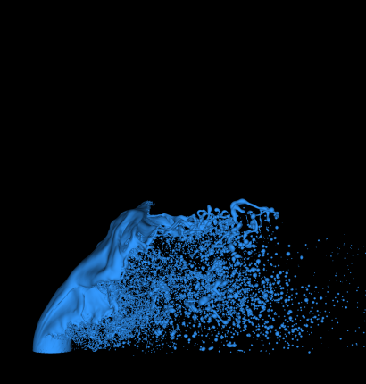

Atomization of a liquid jet in crossflow
Three-dimensional two-phase simulation of a liquid jet injected into a perpendicular gas crossflow, under varying Reynolds, Weber numbers, and momentum flux ratios

Description
This dataset simulates the three-dimensional atomisation of a steady liquid jet injected along the positive x-direction into a perpendicular gas crossflow directed along the negative y-direction. The crossflow deflects the jet and drives interfacial deformation, breakup, and droplet formation. The computational domain measures 3 × 3 × 3, extending from x = 0 to 3 and from -1.5 to 1.5 in both transverse directions. The liquid jet has a radius of 1/12, an initial length of 0.025, and a constant inlet speed of 1. The liquid-to-gas density ratio is 27.84, and the gas enters at y = 1.5 with a speed of approximately 0.5276. The simulation uses Basilisk to solve the incompressible two-phase Navier–Stokes equations with surface tension and to track the liquid–gas interface using a volume-of-fluid method. It starts from a 64³ grid and uses adaptive octree refinement up to level 10, with error tolerances of 0.01 for the liquid volume fraction and 0.1 for each velocity component. The source schedules snapshots every 0.05 dimensionless time units from t = 0.05 through 3.8. The available run log ends at approximately t = 3.165. The configurations vary the liquid jet Reynolds number (Re), the liquid Weber number (We) and the liquid-to-gas momentum flux ratio (J), enabling comparison of their effects on crossflow-induced breakup and droplet formation.
Dataset Access
Cases
Quick Info
- Status: Community dataset
- Paper: N/A N/A
- Contributors: Qianqi yang
- Contact: 226159802@qq.com
- License: Apache License 2.0
- Dimension: 3
- Grid: AMR: Nx=64, Ny=64, Nz=64 (basic); Nx=2048, Ny=2048, Nz=2048 (maxlevel)
- Field location: cell-centered
- Format: custom binary
- Size: 148 GB
- Loading instructions: File format: Basilisk native dump. One file per snapshot containing the simulation fields